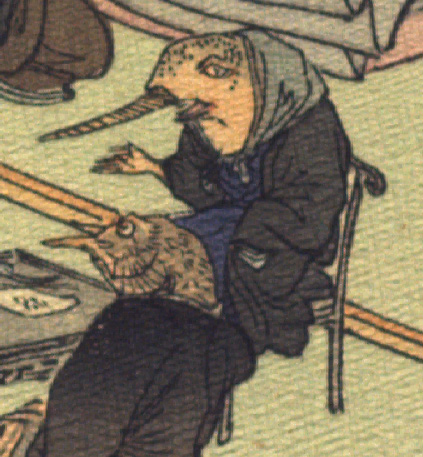

魚の化物。頭部は墨色で、鼻先に長い角のようなものが生えており、イッカクを思わせる姿をしている。首元に青い布を巻き、黒い羽織と青い袴をまとって、背の付いた椅子に座っている。片手を差し出して話している。手は人間のものである。
著作者：J.Dautremer／出典：親書誌：U426_nichibunken_0107：La meduse simple et naïve／日付：2006／資源識別子：U426_nichibunken_0107_0003_0005
Copyright (c)2010- International Research Center for Japanese Studies, Kyoto, Japan. All rights reserved.